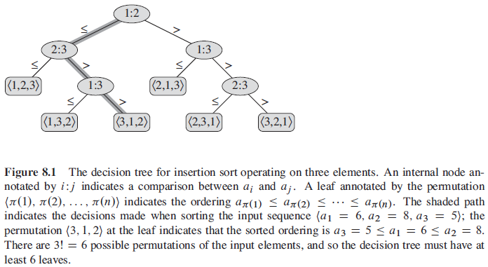
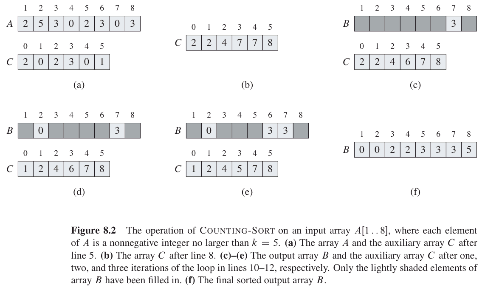
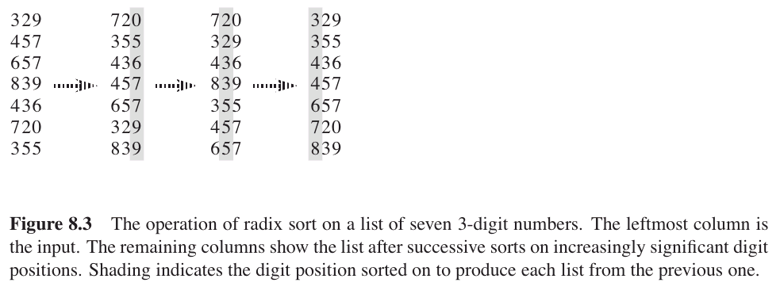
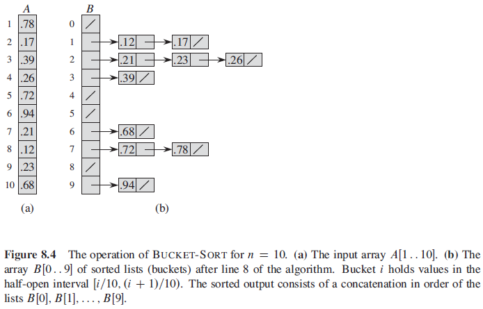

비교정렬(comparison sort)
모든 입력 요소 사이를 비교해 순서를 정하는 정렬
8.1 Lower bounds for sorting
가정
- 모든 입력은 중복값이 없다.
- 모든 비교는 a(i) ≤ a(j) 형태를 취한다.
The decision-tree model
결정 나무(decision tree)
구성 요소 사이의 비교를 나타내는 정 이진 나무
정 이진 나무(full binary tree)
자식 노드가 0개 또는 2개인 이진 나무

도달가능한 나뭇잎(reachable leaf)
정렬을 수행할 때 실제로 도달할 수 있는 나뭇잎
A lower bound for the worst case
주어진 비교 정렬 알고리즘에 대한 비교의 최악인 경우의 수는 결정 나무의 높이와 같다.
정리 8.1 비교 정렬 알고리즘은 최악인 경우에 Ω(n lg n)비교가 필요하다. |
증명
( n : 배열 수 , l : 나뭇잎 수, h : 높이 )
n! ≤ l ≤ 2h,
h ≥ lg (n!)
= Ω(n lg n) (by eq 3.19)
따름정리 8.2
힙정렬과 병합정렬은 점근적으로 최적화된 비교 정렬이다.
8.2 Counting sort
가정
- 입력 요소는 범위 0~k 까지의 정수로 이루어진다.
- counting sort는 입력 요소 x에 대해 x보다 작은 요소 수를 결정한다.
- 입력 배열 A[1..n], 정렬된 출력 배열 B[1..n], 임시 배열 C[1..n]
COUNTING-SORT(A,B,k)
let C[0..k] be a new array
for i = 0 to k
C[i] = 0
for j = 1 to A.length
C[A[j]] = C[A[j]] + 1
// C[i] now contains the number of elements equal to i.
for i = 1 to k
C[i] = C[i] + C[i-1]
// C[i] now contains the number of elements less than or equal to i.
for j = A.length downto 1
B[C[A[j]]] = A[j]
C[A[j]] = C[A[j]] - 1
실행시간 Θ(n)
특성
- 안정적(stable)1이어야 한다. (입력 순서와 같이 출력 순서도 같다.)
- radix sort의 subroutine으로 이용된다.
--------------------

8.3 Radix sort

RADIX-SORT(A,d)
for i = 1 to d
use a stable sort to sort array A on digit i
8.4 Bucket sort
가정
- 입력은 균등 분포를 이용해 랜덤으로 생성된다.
- [0,1] 구간을 가진다.
- 조건 - A[n] , B[0..n-1], 0 ≤ A[i] < 1.

BUCKET-SORT(A)
let B[0..n-1] be a new array
n = A.length
for i = 0 to n-1
make B[i] an empty list
for i = 1 to n
insert A[i] into list B[nA[i]]
for i = 0 to n-1
sort list B[i] with insertion sort
concatenate the lists B[0], B[1], ... , B[n-1] together in order
실행시간 Θ(n)